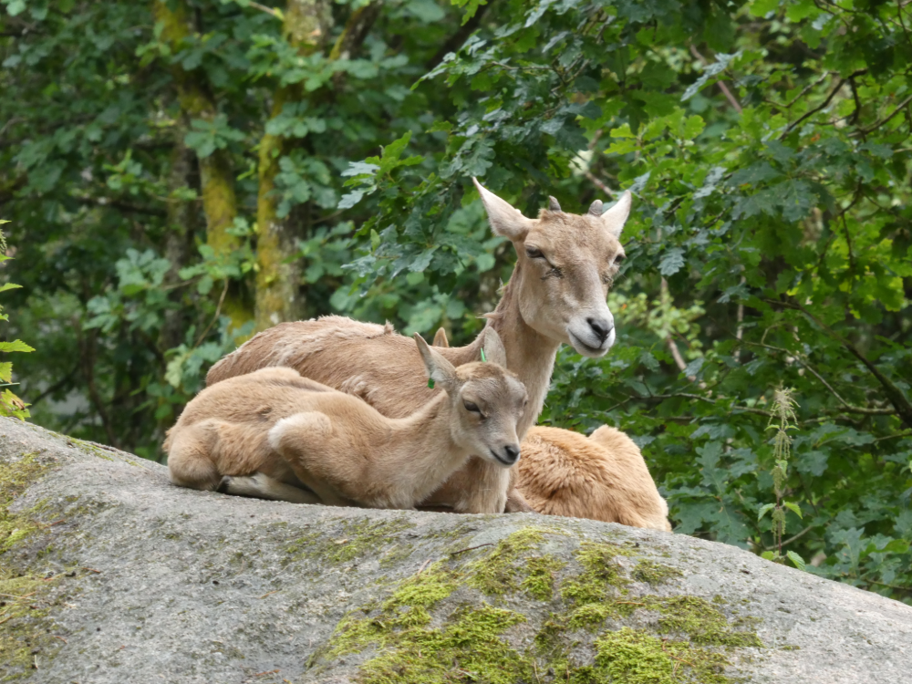

Primer dia de ruta:
Marstrand i el parc Nordens Ark
El primer dia de la teva aventura per la costa oest de Suècia comença amb una visita a l'encantadora illa de Marstrand. Aquest petit paradís marí, conegut pels seus colors vibrants i les seves cases de fusta històriques, ofereix una barreja perfecta de bellesa natural i història. Passeja pels seus carrers empedrats, i agafa un ferry per visitar la imponent fortalesa Carlsten des d'on podràs gaudir d'unes vistes panoràmiques del mar espectaculars. La tranquil·litat de l'illa i la seva rica història marítima fan de Marstrand una primera parada memorable.
Després d'explorar Marstrand, dirigeix-te cap al Parc Nordens Ark, un lloc dedicat a la conservació de la vida salvatge. Aquí, podràs veure de prop algunes de les espècies animals més amenaçades del món, mentre aprens sobre els esforços per protegir-los i el seu hàbitat.
Camina pels camins naturals del parc, observa els animals en entorns semblants als seus hàbitats naturals i descobreix la importància de la biodiversitat.
Aquest primer dia a la costa oest de Suècia no només et permetrà gaudir de paisatges espectaculars i enriquir-te amb la història local, sinó que també aprendràs sobre la necessitat de preservar el nostre entorn natural. La combinació de la tranquil·litat de Marstrand i l'esperança del Parc Nordens Ark és la millor manera de començar aquesta ruta per la costa.